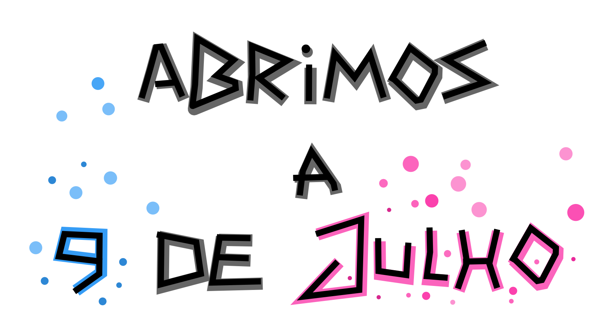

O Collaboratorium é um espaço de voluntariado em Vermoim (Vila Nova de Famalicão) onde todos podem colaborar para juntos aprenderem e ensinarem. 
Dá uma olhadela às Perguntas Frequentes para perceberes na prática como podes usar este espaço em teu benefício.